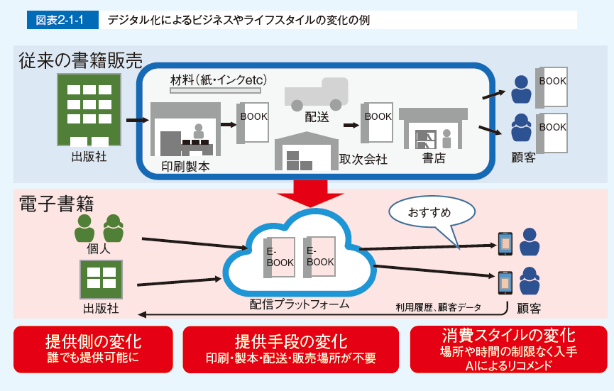
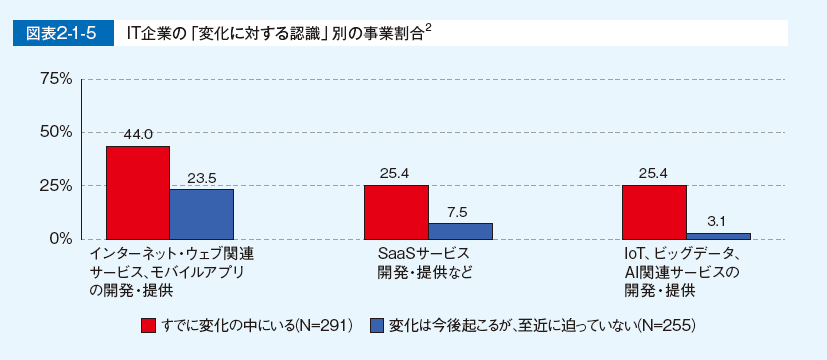
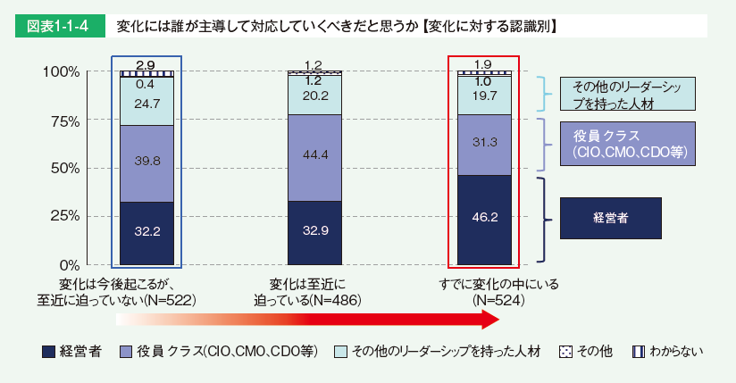
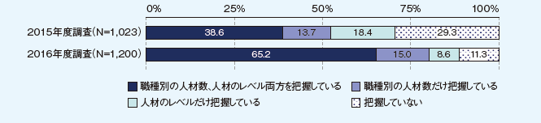
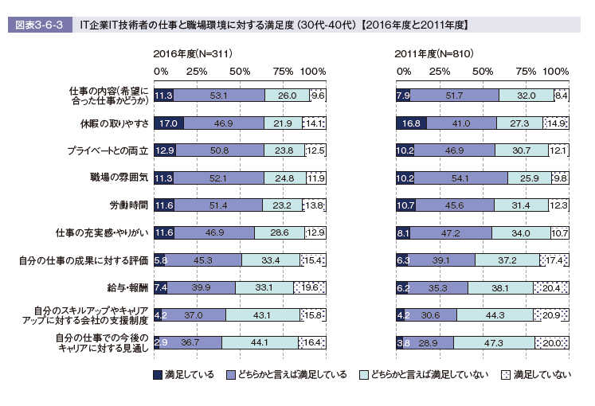

-
- デジタル大変革時代、本番へ
- 時代環境が大きく変わる時、それにそぐわないビジネスは淘汰されていく
- デジタル変革とも呼ぶべき第4次産業革命の入り口にいる
- デジタル時代にふさわしい新たなビジネスを生み出して行く必要がある
- 旧来の仕組みの高度化、洗練は否定されるべきではないが
- “デジタルトランスフォーメーション”が重要
- 仕事の進め方や社会のあり方をゼロベースで刷新し、時代に適合するように自らを変える
- それに歩みを進めるかどうか、つまり企業の方向性を決めるのは、言うまでもなく経営者
- 経営者の役割： 時代の潮流を捉え、自社が変化の中で発展できる道を探り、ビジョンをはっきりと示す
- 同時に従来から続く組織構造の破壊や再構築も必要
- 求められるのは、周囲を巻き込みながら改革を進める能力やビジネスとデジタルを結び付けて全体をデザインする能力を持った新しい時代のリーダー
- ITエンジニアがリーダーへと成長するには挑戦する意欲を持つ
- さまざまな経験を積み、多様な人と関わる環境が必要
- 企業が行わなければならないのは、誰もが挑戦できる環境、開かれた場を作ること
- 個々のIT人材は、自らも“デジタルトランスフォーメーション”の流れの中にあることを意識
- その中で活躍できる人材となれるように、自らの能力を高めていくことが重要である
- そのためには情報への感度を高め、自ら挑戦する場を求める姿勢が重要になる。普段の仕事に専念しているだけでは不十分と考えなければならない。
- 企業に向けたメッセージ
- IT企業
- デジタル変革が進む中では、IT企業は“デジタルトランスフォーメーション”に資する技術力や提案力を磨き、ユーザー企業のパートナーとして新たな事業価値を生み出していく役割を担う必要がある。
- そのためにはユーザー企業やベンチャー企業などとの「協働」関係を築くことも欠かせない。
- ユーザー企業（IT部門）
- “デジタルトランスフォーメーション”を推進するのか、それとも現状維持を選択するのか。
- 第4次産業革命が進むにつれて、発展するビジネスと縮小するビジネスが明確になっていく。
- CIOやIT部門は、そのことを認識し、変化を主導する側に立つ必要がある。
- そのために一刻も早く現状把握を行い、ビジョンを明確にし、戦略を遂行しなければならない。
- “デジタルトランスフォーメーション”を実現するには、ビジネスとデジタルのスキルを併せ持った人材が重要となる。
- それがあって初めて、イノベーティブなデジタル技術を持つ企業や、他業種など多様な企業間での連携を進められる
- その視点に立って、人材の育成と獲得をしていく必要がある。
- 従来、社内でIT業務の中核を担ってきたIT部門は今、再び挑戦を迫られている。
- デジタル変革に伴って生じる新たな事業や業務において重要な役割を担うことへの挑戦でもある。
- IT人材個人に向けたメッセージ
- デジタル時代は、個々のIT人材にとって活躍の場を広げられるまたとないチャンスである。
- 所属する企業で新たな試みをすることもできるし、起業のチャンスも開けている。
- クラウドコンピューティングやモバイルの進展で、個人や少数のチームでできることが飛躍的に拡大している
- このことを認識し、目の前の業務だけにとらわれることなく、広く視野を持って進むべき道を探り、学ぼう。勉強会やコミュニティなど、学びの場は周囲にある。自己研鑽によって能力を高めれば高めただけ、社会をリードする人材になっていく。
- 1．デジタルトランスフォーメーション時代のIT人材
- “デジタルトランスフォーメーション”とは何か
- ITの進展やインフラの整備によって、ビジネスや社会のあり方が変わり始めている。
- あらゆるものがインターネットに接続するIoTの拡がりや、ビッグデータ活用、人工知能（AI）の様々な分野への適応が始まっている。
- デジタル化を進めるということは、様々な要素（アナログデータも含む）をデジタル化、数値化して扱うことを意味する。
- 共通に扱えるデータへと変換することによって、処理や分析が可能になり、フィードバックまで含めた一連の流れを作ることが可能になる。
- デジタル化の本質は、以上のようなデータ駆動型へのビジネスや社会の変革にある。
- その変化は、“デジタルトランスフォーメーション”や“デジタル革命”と呼ばれている。
- 
- 既存のビジネスや業務に新技術を取り入れるだけでなく、ビジネスモデルを変え、経済活動のみならず、個人の生活や社会構造にまで影響が及ぶ。
- デジタル化によって起こる変化の一例として、紙の書籍から電子書籍へのデジタル化を図式化したものである。
- すでに始まっている“デジタルトランスフォーメーション”
- 「IoTやビッグデータ、AIなど技術の進展等によって、社会や産業、企業、人のあり方や働き方が大きく変化すると言われている。この変化に対してどのように捉えているか」
- ネットサービス実施企業は
- 、「すでに変化の中にいる」が約40%である。インターネットを活用し、データを扱うビジネスを実施しているという性質上、変化に対して敏感だと言える。
- 事業会社であるユーザー企業では
- 「変化は今後起こるが、至近に迫っていない」という回答の割合が最も高い。
- 「大きな変化が起きるとは思わない」や「わからない」も他の企業区分に比較して高い割合を占めている。
- 一方、IT企業では、
- 「すでに変化の中にいる」、「変化は至近に迫っている」、「変化は今後起こるが、至近に迫っていない」、「この変化が特別なわけではなく、常に変化は起きている」の回答割合がほぼ同率だった。

- 外部ITサービス利用状況、現在の事業【変化に対する認識別】

- 
- “デジタルトランスフォーメーション”が進む企業では、経営者による主導の重要性を認識
- デジタルトランスフォーメーションには、大きな変化が伴うため、業務の部分的なデジタル対応やIT導入による効率化のみでは対応できない。
- “変化”には誰が主導して対応していくべきか尋ねた。
- 「すでに変化の中にいる」企業では、他の認識の企業に比べて「経営者」が主導していくべきだという回答の割合が高い。
- 
- “デジタルトランスフォーメーション”の鍵を握るリーダー的人材
- 全体方針を示す経営者に加え、具体的な推進を行う人材も存在している。
- デジタル化の具体的な施策の決定や新事業の立ち上げなどを主導する、リーダー的な役割を担う人材が大きな役割を果たしている。
- この人材は、例えばCIOや、デジタル推進部門、デジタル技術を用いた新事業部門、IT系部門などに存在し、それぞれのデジタル化を推進している。

- 方針やビジョンの明確化」、「専門組織・部署の設置」、「Fail fastなどの風土改革」を重要視
- デジタル化を「主導すべき」人が実施すべき施策
- 「新たな市場創出のための方針やビジョンの明確化」
- 「新たな市場創出のための専門組織・部署の設置」
- 「新たなチャレンジを評価するFail fastなどの風土改革」

- 経営者とリーダーが周囲を巻き込み、改革を進める
- リーダー的存在が企業内の複数個所に存在する場合もあるが、経営者と現場に近いリーダーとがともに改革を進めていく大きな流れは変わらない。

- デジタル化の推進をリードする人材に必要な能力と環境
- ・デジタル化を推進するリーダーに求められるのは、“他人を巻き込む力”、“ビジネスとデジタルの知見”
- ・デジタル化を推進するリーダーが育ってきた背景は、“多様な経験と新しいものへの挑戦”、“ネットワーク、外部とのつながり”
- ・デジタル化を推進するリーダーの育成に重要となる環境の整備

- デジタル化に携わる人材
- 必要な能力
- もともと製品の社内開発・運用を行ってきた企業の場合、
- 社内に既存の技術力はあり、加えて具体的な技術（データ解析やAI、クラウド等）が求められている。
- また、具体的な要素技術だけでなく、システムの構造設計を行い開発する能力（システムアーキテクト）の重要についても挙げられていた。
- 一方、これまでITが深くかかわっていなかった事業がデジタル化した場合、
- 今までIT部門が行っていた外部企業への開発委託を事業部門が直接行うことになり、ITを事業に適用する能力や、機能設計や要件定義を行う能力が求められる。
- 人材の獲得方法と育成
- 事業のデジタル化に必要なIT能力を、既存の人材でまかなうのは難しいとの意見があった。
- デジタル化した事業を行っている企業では、ネット系の企業等でデジタルビジネスの経験がある者を中途採用し、事業の推進を行っている例が見られる。
- また、新しい技術（データ活用やAI、IoTなど）を持った人材に関しては、中途採用の難しさを挙げる企業が多く、新卒採用した人材を育成して人材確保する傾向が見られ、新卒を採用する際に理数系人材を重視する企業もいくつかあった。
- 育成のスピードアップと高い技術力を持った人材の輩出につなげたい考えである。
- ただし、内部人材育成の難しさを挙げる企業もあり、必要な技術を持った人材を中途採用できる場合は行い、できない場合はアウトソーシングや、外部との連携を行うことで技術を補完する場合もあった。
- 2．日本と米国の情報処理・通信に携わる人材
- 日米、欧州等の情報処理・通信に携わる人材の所属企業
- 日本はIT企業に所属する情報処理・通信に携わる人材の割合が72%と突出して高くなっている。
- 一方、日本以外の国は、IT企業以外の割合が5割を超えており、米国はIT企業以外に所属する情報処理・通信に携わる人材の割合が65.4%と最も高くなっている。
- 日米の情報処理・通信に携わる人材の業種別人材の割合
- 米国では、「IT企業」に次いで「サービス」の割合が30.2%と高くなっている。
- 「金融」については日本の2%に対し米国では8.4%、「公務」については日本の0.5%に対し米国が6%と、日本より幅広い業種に情報処理・通信に携わる人材が所属していることがわかる。

- 米国における情報セキュリティ技術者に必要なスキルや経験
- 「コンピュータ科学または関連科目の準学士号」の割合が68.8%と最も高く、「コンピュータ科学、サイバーセキュリティ、情報セキュリティまたは関連科目の学士号」（60.4%）、「情報システムに関する修士号（MS（Master of Science））」（57.2%）と続き、学歴を重視する傾向が見られる。
- 「資格（例えばCISSP）」が55.4%と、資格への関心も高い。

- 米国の組織のCISOに必要なスキルや経験
- 「リーダーとしての経験」の割合が92.1%と最も高く、「IT部門での業務経験」（72.8%）、「一般的な経営学修士号（または同等の修士号）」（71.3%）と続いている。
- 情報セキュリティ技術者にとって必要なスキルや経験の調査結果とは違い、経験を重視する傾向が見られる。

- 米国の組織におけるサイバーセキュリティ：トレーニングプログラム開発のための大学との連携・協業状況
- 約5割もの組織がサイバーセキュリティトレーニングプログラムの開発のために大学と連携・協業していることがわかる。

- 3．IT人材不足の動き
- IT人材の“量”に対する過不足感【過去10年の変化】
- IT企業では、リーマンショック以来高まり続けていたIT人材の“量”に対する不足感の高まりがやや緩和した。
- 「大幅に不足している」と答えた割合が、2015年度調査の24.2%から、今年度では20.3%と減少している。
- また、「特に過不足はない」は2015年度調査の8.1%から、今年度では11.9%と増加している。

- 人材不足改善の取り組みのうち効果があったもの
- 「社内人材の育成強化」が最も多く、66％に上っている。

- IT人材の「職種別の人材数」と「人材のレベル」の把握状況【経年】
- 計画的な人材育成には人材把握が必要となるが、今年度調査では、「職種別の人材数、人材のレベル両方を把握している」割合が大きく増加していた。
- 
- IT人材の“量”に対する過不足感【過去9年の変化】
- 2010年ごろに不足感が減少した以降、2014年度調査までは不足感に大きな変化のなかったユーザー企業だが、2015年度調査の結果ではIT人材の“量”について、「大幅に不足している」「やや不足している」と回答した割合が増加した。
- 今年度も引き続き不足感が増す傾向にある。

- 4．IT人材動向（IT人材の意識の比較【2016年度と2011年度】）
- 仕事や職場の環境に対する満足度（30代-40代）【2016年度と2011年度】
- 2016年度、2011年度共に「仕事内容（希望に合った仕事かどうか）」、「休暇の取りやすさ」、「プライベートとの両立」「職場の雰囲気」に対する満足度は高い。
- 全項目に対して微増微少はあるが、変化は読み取れない。
- 
- 仕事内容に対する考え方（30代-40代）【2016年度と2011年度】
- 「この仕事をしていることに誇りを持っている」では、「よく当てはまる、どちらかと言えば当てはまる」では2011年度の51.3％から2016年度の66.3％と増加した。
- 一方、「新しい部署や企画を立ち上げる仕事をしたい」では「よく当てはまる、どちらかと言えは当てはまる」の合計が、2011年度の67.7％から2016年度の35.4％、「関係者を説得し、社内改革する仕事をしたい」も同様に2011年度53％から2016年度の40.2％と割合が低下している。

- キャリアやスキルアップに対する考え方（30代-40代）2016年度と2011年度】
- 2016年度、2011年度共に「技術の変化に合わせて自分もスキルアップしなければならないと思う」について「よく当てはまる、どちらかと言えは当てはまる」と回答した割合は8割台半ばであり、「新しい技術やスキルを学ぶのは楽しい」の割合も共に7割強である。
- 一方、「将来のキャリアパスが明確である」で「よく当てはまる、どちらかと言えは当てはまる」と回答した割合は2011年度と2016年度共に約3割であり傾向に変化はない。
- 仕事と職場環境に対する満足度（30代-40代）【2016年度と2011年度】
- 全項目において「満足している」の割合が増加している。

- 仕事内容に対する考え方（30代-40代）【2016年度と2011年度】
- 「この仕事をしていることに誇りを持っている」では「当てはまる、どちらかと言えは当てはまる」を合計した割合が2011年度の57.7％から2016年度の67.3％と増加している。
- 一方、「新しい部署や企画を立ち上げる仕事をしたい」では「当てはまる、どちらかと言えは当てはまる」の合計は、2011年度の76.5％から2016年度の52.7％へと23.8ポイント低下した。
- また、「新しい顧客を開拓・獲得する仕事をしたい」の割合も2011年度の59.8％から2016年度の47％へと低下している。

- キャリアやスキルアップに対する考え方（30代-40代）2016年度と2011年度】
- 「将来のキャリアパスが明確である」では「当てはまる、どちらかと言えは当てはまる」を合計した割合が2011年度の31.5％から2016年度の45.9と増加し、「将来のキャリア目標を持っている」、「自分のキャリア目標は実現可能である」のいずれにおいても割合が増加している。
- しかしその一方で、「自分の将来のキャリアに対して強い不安を感じている」に対する「よく当てはまる」の割合はやや増加しており、キャリアは明確なったものの、不安感は弱まってはいないように見受けられる。